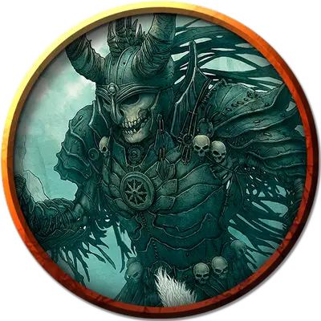

Скелет великана
Giant Skeleton
Огромная Нежить, нейтрально-злая

Класс Доспеха 17 (природный доспех)
Хиты 115 (10к12 + 50)
Скорость 30 футов
| мод | спас | ||
|---|---|---|---|
| СИЛ | 21 | +5 | +5 |
| ЛОВ | 10 | +0 | +0 |
| ТЕЛ | 20 | +5 | +5 |
| мод | спас | ||
|---|---|---|---|
| ИНТ | 4 | −3 | −3 |
| МДР | 6 | −2 | −2 |
| ХАР | 6 | −2 | −2 |
Уязвимость к урону дробящий
Иммунитет к урону яд
Иммунитет к состояниям истощение, отравление
Чувства тёмное зрение 60 футов, пассивное Восприятие 8
Языки понимает Великаний, но не может говорить
Опасность 7 (2900 опыта)
Бонус мастерства +3
Особенности
Увёртливость. Если скелет подвергается эффекту, позволяющему совершить спасбросок Ловкости, чтобы получить только половину урона, он вместо этого не получает урон, если преуспеет в спасброске, и получает лишь половину урона, если провалит спасбросок.
Сопротивление магии. Скелет совершает с преимуществом спасброски от заклинаний и прочих магических эффектов.
Иммунитет к изгнанию. Скелет обладает иммунитетом к эффектам, изгоняющим нежить.
Действия
Мультиатака. Скелет совершает три атаки Скимитаром.
Скимитар. . Рукопашная атака оружием: +8 к попаданию, досягаемость 10 фт, одна цель. Попадание: 15 (3к6 + 5) рубящего урона.
Описание
В Гробнице ужасов сокровища иногда сами идут в руки. В одной из областей «наградой» за попытку забрать некие ценности становится оживленный скелет великана — смертельно опасного не только благодаря размеру и силе, но и обладающего защитой, свойственной лишь гораздо более могущественной нежити.
Природа нежити. Скелет не нуждается в воздухе, еде, питье и сне.